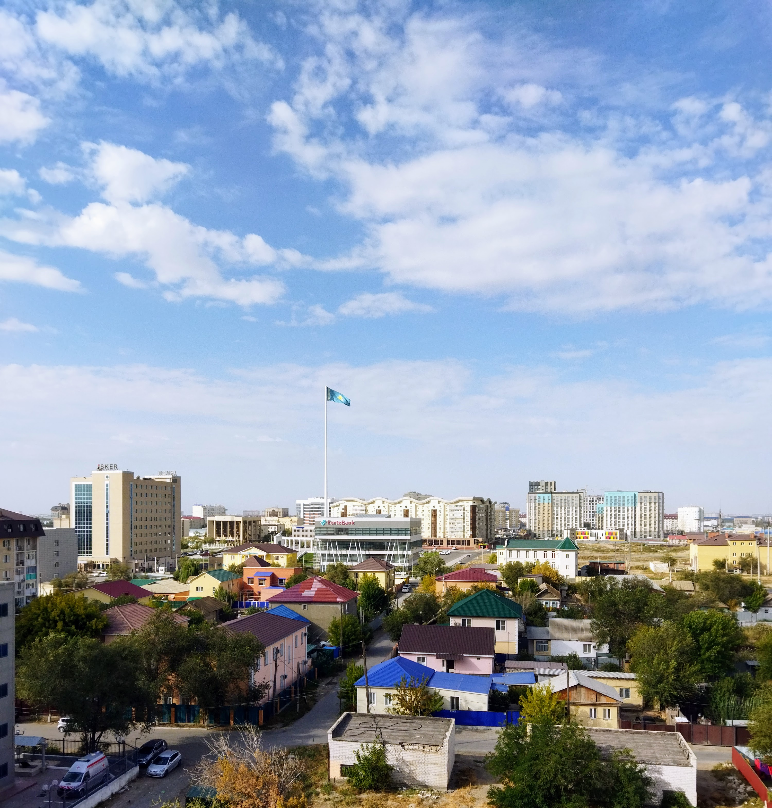

Карачаганак остановлен на ремонт: добыча в Казахстане снизится до 450 тысяч тонн
Месторождение находится на плановом ремонте с 7 сентября по 1 октября. Казахстан уже снизил план добычи на 2026 год с 98 до 96 млн тонн из-за атак на инфраструктуру КТК.

Карачаганак — одно из трёх крупнейших нефтегазовых месторождений Казахстана — было остановлено на плановый ремонт 7 сентября 2026 года. Остановка продлится до 1 октября.
По данным The Times of Central Asia, за время работ добыча снизится на 400–450 тысяч тонн.
Годовой план уже снижен
Казахстан понизил план добычи нефти на 2026 год с 98 до 96 млн тонн из-за атак на инфраструктуру Каспийского трубопроводного консорциума (КТК).
Потери в добыче от атак на КТК составят 3,5 млн тонн.
— Ерлан Аккенженов, министр энергетики Казахстана (сентябрь 2026)
Атаки фиксировались в январе, июне и июле.
В цифрах
- Ремонт на Карачаганаке: 7 сентября — 1 октября 2026 года
- Снижение добычи из-за ремонта: 400 000–450 000 тонн
- Поддерживаемый годовой уровень Карачаганака: 11–12 млн тонн
- Пересмотренный план на 2026 год: 96 млн тонн (было 98 млн)
- Первоначальный прогноз: 100,5 млн тонн
- Потери от атак на КТК: 3,5 млн тонн
- Мощность КТК: 72,5 млн тонн в год
- Доля экспорта Казахстана через КТК: более 80%
Экспорт
В августе отгрузки по КТК составляли около 1,6 млн баррелей в сутки — рост на 22%. На сентябрь ожидается около 1,5 млн баррелей в сутки.
Министр энергетики заявил, что полномасштабной альтернативы КТК по экспортным мощностям нет, хотя часть нефти можно перенаправить по другим трубопроводам.
Фактор Тенгиза
После июльского инцидента добыча в стране упала примерно на 21%. На Тенгизе добыча снизилась с 925 тысяч до 406 тысяч баррелей в сутки — на 56%.
Заявление в марте
Согласно плану экономического развития, добыча нефти в 2026 году должна была достичь 100,5 млн тонн. Однако из-за событий конца прошлого и начала этого года — атак на инфраструктуру КТК и пожаров на Тенгизе — добыча, вероятно, составит 96–98 млн тонн.
— Ерлан Аккенженов, министр энергетики Казахстана (перевод The Times of Central Asia, 12.03.2026)
Текущее положение
По данным Trend, прогноз в 96 млн тонн был озвучен 14 сентября на заседании штаба по обеспечению экономического роста под председательством вице-премьера, министра национальной экономики Серика Жумангарина.
В нефтегазовом секторе наблюдается постепенное восстановление добычи нефти. Индекс физического объёма за восемь месяцев составил 91,6%, добыто 61,7 млн тонн нефти против 91,1% и 53,2 млн тонн в январе–июле 2026 года.
— Из заявления правительства Казахстана (перевод Trend, 14.09.2026)
Контекст
Целевой годовой уровень добычи на Карачаганаке — 11–12 млн тонн. На месторождении продолжаются работы по вводу шестого компрессора обратной закачки сырого газа.
Экспорт нефти остаётся одним из основных источников бюджетных и валютных поступлений Казахстана, поэтому остановка даже одного месторождения заметно влияет на годовые показатели.